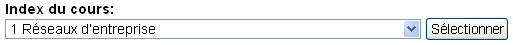

Guide de l’utilisateur - Thème
Sommaire
- Niveau du cours
- Présentation multimédia
- Mise en page
- Navigation au clavier
Fermer la fenêtre
Haut de la page
1. Niveau du cours
L’attribut du niveau du cours modifie le niveau auquel le contenu du cours est affiché. Les options sont : Chapitre, Section, Rubrique ou Page. Le niveau par défaut est Chapitre.
- Chapitre : affiche toutes les sections, rubriques et pages du chapitre sélectionné.
- Section : affiche toutes les rubriques et pages de la section sélectionnée.
- Rubrique : affiche toutes les pages de la rubrique sélectionnée.
- Page : affiche uniquement la page sélectionnée.
Fermer la fenêtre
Haut de la page
2. Présentation multimédia
L’attribut de présentation multimédia modifie le format auquel la partie multimédia de chaque page est affichée. Les options sont : Toutes les options, Texte court, Texte complet ou Multimédia visuel interactif. La présentation par défaut est Toutes les options.
- Texte du multimédia uniquement : une courte description écrite de chaque élément multimédia est présentée chaque fois qu’un élément multimédia est rencontré dans le cours. Cette option est entièrement accessible via le clavier.
- Multimédia visuel interactif uniquement : l’élément multimédia s’affiche dans son format d’origine, qui contient une présentation visuelle du contenu et souvent des éléments interactifs tels qu’une vidéo, un glisser-déplacer, une animation ou un exercice. Les éléments présentés dans ce format ne sont pas entièrement accessibles et requièrent l’utilisation de la souris.
- Texte et multimédia visuel : aucun multimédia n’est affiché par défaut. À chaque fois qu’un élément multimédia s’affiche dans le cours, l’utilisateur peut sélectionner la façon dont le multimédia est affiché. Cette sélection est effectuée pour chaque élément multimédia, et chacun peut être affiché dans un format différent.
Fermer la fenêtre
Haut de la page
3. Mise en page
Toutes les pages sont mises en forme de la même façon, mais le contenu dépend du niveau de cours choisi avant le lancement.
Les premiers éléments qui s’affichent sont les liens vers les outils du cours. Ils permettent d’accéder à une zone située dans la partie supérieure de la page, avec l’outil sélectionné. Les deux outils disponibles sont « Rechercher » et « Glossaire ». L’extrémité de la zone des outils est indiquée par une règle horizontale.
- Rechercher - S’ouvre dans une nouvelle fenêtre. Contient un champ dans lequel vous pouvez entrer n’importe quelle chaîne à rechercher. Une fois la recherche envoyée, une liste de pages contenant la chaîne recherchée dans le corps du texte est générée. Les pages sont répertoriées dans leur ordre d’apparition dans le cours.
- Glossaire - S’ouvre dans une nouvelle fenêtre. Contient une liste indexée des termes du glossaire. Vous pouvez sélectionner ces termes pour en afficher la définition. Cet outil est également lancé lorsqu’un lien hypertexte vers un terme du glossaire est sélectionné dans le corps du texte d’une page.
L’élément suivant est l’index du cours. Cette zone de sélection contient la liste complète des éléments du cours répartis en fonction du niveau du cours sélectionné. Elle permet de naviguer rapidement au sein du cours. Pour utiliser l’index, sélectionnez l’élément souhaité dans la liste, puis cliquez sur le bouton Sélectionner pour atteindre cet élément. L’extrémité de la zone d’index du cours est indiquée par une règle horizontale.

Le nombre de sections, rubriques et pages affichées dépend du niveau de cours sélectionné au lancement. L’extrémité du niveau de contenu est indiquée par une règle horizontale.
Le contenu du cours est affiché à côté au format suivant :
- Titre et sous-titre du cours dans la balise <h1>
- Numéro et titre du chapitre dans la balise <h2>
- Numéro et titre de la section dans la balise <h3>
- Numéro et titre de la rubrique en gras et en italique
- Numéro de page en gras
Les derniers éléments de la page sont les éléments de navigation Suivant, Précédent et Haut de la page.
- Suivant : passe au chapitre suivant, ou à la section, rubrique ou page suivante, en fonction du niveau du cours sélectionné.
- Précédent : passe au chapitre précédent, ou à la section, rubrique ou page précédente, en fonction du niveau du cours sélectionné.
- Haut de la page : retourne en haut de la page sélectionnée.
Fermer la fenêtre
Haut de la page
4. Navigation au clavier
Les commandes de clavier suivantes peuvent être utilisées pour accéder aux outils et naviguer dans le cours :
- Faire basculer l’outil Rechercher : Ctrl+Maj+S - Ouvre l’outil Rechercher dans une nouvelle fenêtre.
- Faire basculer l’outil Glossaire : Ctrl+Maj+G - Ouvre l’outil Glossaire dans une nouvelle fenêtre.
- Suivant : Ctrl+Alt+Droite passe au chapitre suivant, ou à la section, rubrique ou page suivante, en fonction du niveau du cours sélectionné.
- Précédent : Ctrl+Alt+Gauche passe au chapitre précédent, ou à la section, rubrique ou page précédente, en fonction du niveau du cours sélectionné.
- Mettre en évidence l’élément suivant : Ctrl+Alt+Bas met l’élément suivant de la page en évidence ; similaire à la touche Tab.
- Mettre en évidence l’élément précédent : Ctrl+Alt+Haut met l’élément précédent de la page en évidence ; similaire à la combinaison de touches Alt+Tab.
Remarque : certains plugins de navigateur et autres logiciels de superposition, tels que des lecteurs d’écran, sont susceptibles de remplacer ces commandes de clavier.
Fermer la fenêtre
Haut de la page